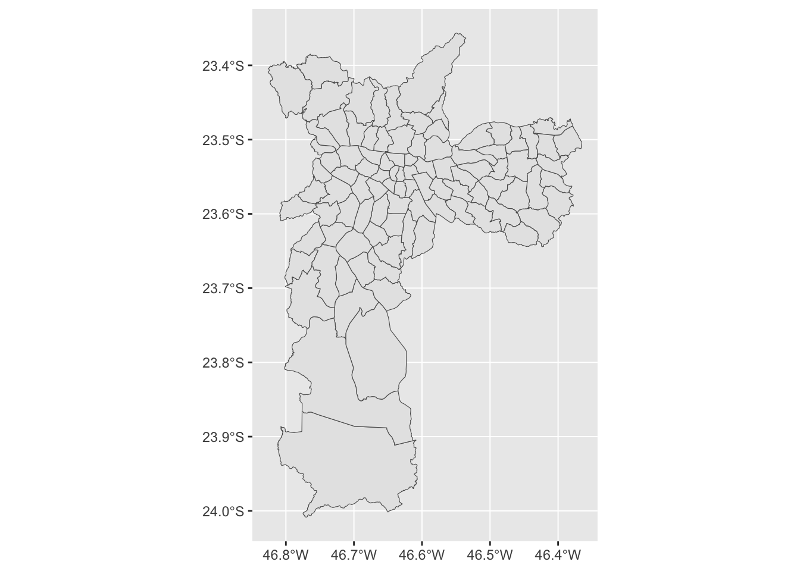
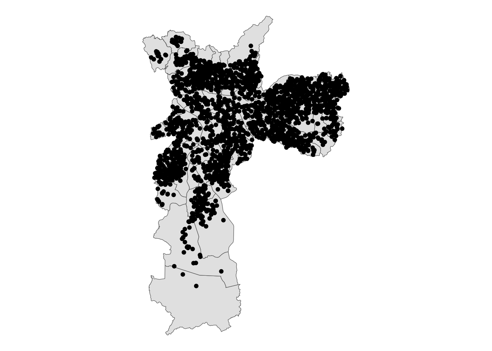
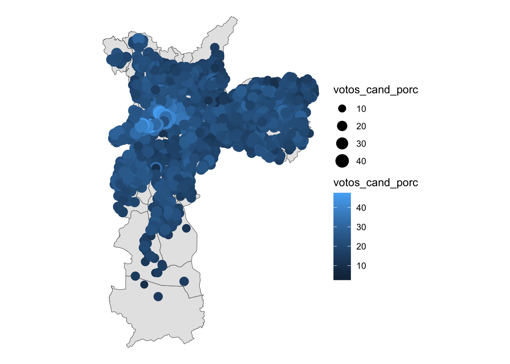
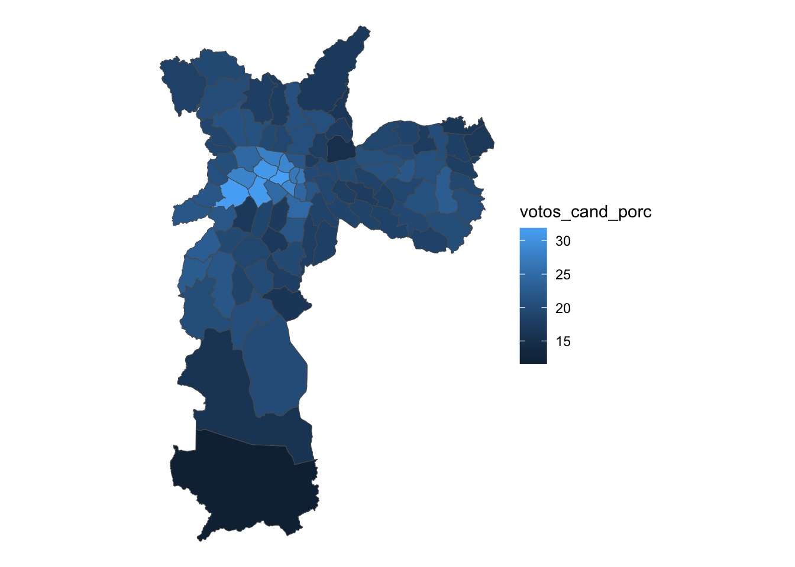
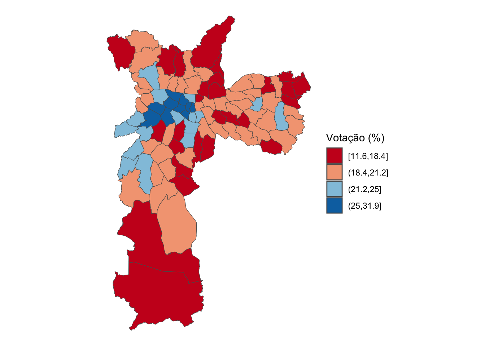
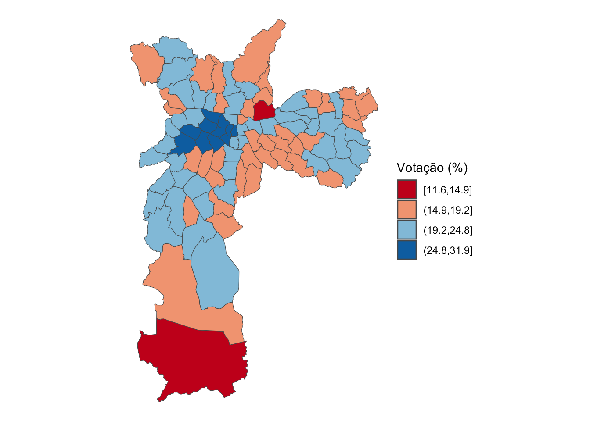

Parte 3 Mapas municipais
3.1 Organização Intramunicipal
Administrativamente, a Justiça Eleitoral se organiza em zonas eleitorais, nas quais estão localizados os locais de votação, que abrigam as seções eleitorais (sendo que cada seção eleitoral corresponde a uma urna). Dentro dos municípios, porém, a organização territorial da Justiça Eleitoral não coincide necessariamente com outras divisões administrativas. Ou seja, os limites das zonas eleitorais muitas vezes não correspondem aos limites de bairros ou distritos.
Além disso, os Tribunais Regionais Eleitorais (TREs) não têm o costume de divulgar arquivos espaciais que apresentem os limites dessas zonas. Então, como produzir mapas de resultados eleitorais dentro de municípios?
Para isso, utilizamos outra fonte de dados do Tribunal Superior Eleitoral (TSE). O TSE divulga os endereços de todos os locais de votação brasileiros e as suas seções eleitorais correspondentes de todas as disputas desde 2008 (alguns TREs divulgam essas informações para eleições prévias a 2008) e podem ser usadas para esse fim. Esses registros administrativos têm, inclusive, uma coluna com a informação de bairro desse endereço.
Bastaria então unir o banco de resultados por seção eleitoral com esse de locais de votação, somar os votos no bairro informado pela coluna dos registros do TSE, acoplar os resultados num mapa e pronto, certo? Infelizmente, não. A informação do bairro advinda dos registros do TSE frequentemente não coincide com o bairro onde geograficamente está esse local de votação (para mais informações, veja Gelape, 2017, 2018).
Assim, para produzirmos mapas com votações de candidatos dentro de um município, precisamos encontrar a localização dos locais de votação no espaço. Neste exercício, utilizamos um banco de dados disponibilizado pelo prof. Daniel Hidalgo (do Massachusetts Institute of Technology, MIT) que cataloga a latitude e longitude para os locais de votação brasileiros entre 2006 e 2020. Esse foi um esforço de pesquisa que cruzou diferentes fontes de dados para determinar as coordenadas geográficas e que contou com a participação do FGV-CEPESP (para mais informações, deem uma olhada no repositório do GitHub – e na documentação da metodologia deste processo). Com a latitude e longitude, podemos cruzar essa informação espacial com outra(s) informações espaciais, como um mapa de bairros de um município, para passar aos nossos pontos (isto é, os locais de votação) tais informações.
3.2 Importação das Bases
Neste exercício, prepararemos um mapa da cidade de São Paulo contendo os dados de votação por seção eleitoral do candidato a prefeito Guilherme Boulos (PSOL) em 2020.
Nosso primeiro passo, como no exercício anterior, será carregar os pacotes relevantes para a nossa análise. O pacote tidyverse carrega diversos pacotes importantes, como alguns já utilizados anteriormente, como o ggplot2 e o dplyr. Também carregamos novamente os pacotes sf e geobr. Temos, no entanto, três novidades. Primeiro, o ggspatial nos ajudar a plotar mapas mais detalhados (de certa maneira, ele é utilizado em conjunto com o ggplot2). O classInt nos ajuda a dividir distribuições de dados, para preparar escalas de cores de um mapa, por exemplo. Por fim, o pacote cartography ajuda a produzir mapas temáticos, com mais funcionalidades para essa tarefa.
library(tidyverse)
library(sf)
library(geobr)
library(ggspatial)
library(classInt)
library(cartography)Agora que já temos os pacotes carregados, vamos baixar os bancos de dados (todos preparados em formato RDS). Em primeiro lugar, baixamos a base de dados contendo dados de votacao por secao eleitoral do candidato a prefeito Guilherme Boulos (PSOL), e dos candidatos a vereador Milton Leite (DEM), Fernando Holiday (PATRIOTA) e Eduardo Suplicy (PT). Ela está salva como base2020.rds.
Para facilitar nossa análise, aproveitamos o mesmo bloco de código para encurtar os nomes de cada um destes candidatos. Para tal, utilizamos as funções mutate e case_when do pacote dplyr.
candsp2020 <- readRDS("base/base2020_sp.rds") |>
mutate(nm_votavel = case_when(
nm_votavel == "MILTON LEITE DA SILVA" ~ "Milton Leite",
nm_votavel == "GUILHERME CASTRO BOULOS" ~ "Boulos",
nm_votavel == "EDUARDO MATARAZZO SUPLICY" ~ "Suplicy",
nm_votavel == "FERNANDO HOLIDAY SILVA BISPO" ~ "Holiday"))Para se ter ideia de seu conteúdo, apresentamos sua head abaixo. São 28 colunas (variáveis) e 80.984 linhas (observações) contendo o número de votos que cada um dos três candidatos obteve na eleição de 2020, sendo Boulos para prefeito e os demais para vereador.
head(candsp2020)## # A tibble: 6 × 13
## dt_geracao ano_eleicao nr_turno sg_uf nm_municipio cd_munic…¹ nr_zona nr_se…² nr_lo…³ ds_ca…⁴ nm_vo…⁵ qt_vo…⁶ votos…⁷
## <chr> <dbl> <dbl> <chr> <chr> <dbl> <dbl> <dbl> <dbl> <chr> <chr> <dbl> <dbl>
## 1 21/12/2020 2020 1 SP SÃO PAULO 71072 408 242 1180 Veread… Suplicy 3 258
## 2 21/12/2020 2020 1 SP SÃO PAULO 71072 346 408 1309 Veread… Milton… 2 270
## 3 21/12/2020 2020 1 SP SÃO PAULO 71072 346 408 1309 Veread… Holiday 4 270
## 4 21/12/2020 2020 1 SP SÃO PAULO 71072 408 255 1198 Veread… Suplicy 3 250
## 5 21/12/2020 2020 1 SP SÃO PAULO 71072 408 255 1198 Veread… Holiday 3 250
## 6 21/12/2020 2020 1 SP SÃO PAULO 71072 408 255 1198 Prefei… Boulos 55 248
## # … with abbreviated variable names ¹cd_municipio, ²nr_secao, ³nr_local_votacao, ⁴ds_cargo, ⁵nm_votavel, ⁶qt_votos,
## # ⁷votos_validos_secaoNosso próximo passo é carregar a base com dados geolocalizados de cada um dos locais de votação no município de São Paulo. Seu nome é lvsp2020.rds.
lvsp2020 <- readRDS("base/lvsp2020.rds")Ao abrir esta base de dados, você verá o endereço de cada local de votação (por ex., o Colégio Objetivo na Av. Paulista, 900, Bela Vista), acompanhado de sua longitude e latitude, além de outros dados espaciais. A base possui 2.063 observações e 19 variáveis.
head(lvsp2020)## # A tibble: 6 × 19
## local_id ano sg_uf cd_loca…¹ cod_l…² nr_zona nr_lo…³ nr_cep nm_lo…⁴ nm_lo…⁵ ds_en…⁶ ds_ba…⁷ pred_…⁸ pred_…⁹ pred_…˟
## <dbl> <dbl> <chr> <dbl> <dbl> <dbl> <dbl> <dbl> <chr> <chr> <chr> <chr> <dbl> <dbl> <dbl>
## 1 678500 2020 SP 71072 3550308 1 1015 1.31e6 SÃO PA… COLÉGI… AV. PA… BELA V… -46.7 -23.6 1.60
## 2 670114 2020 SP 71072 3550308 2 1015 5.00e6 SÃO PA… COLÉGI… AV. FR… AGUA B… -46.7 -23.5 1.76
## 3 688691 2020 SP 71072 3550308 4 1015 3.10e6 SÃO PA… EE. PR… RUA DA… MOOCA -46.6 -23.6 1.61
## 4 694622 2020 SP 71072 3550308 5 1015 1.43e6 SÃO PA… CLUBE … RUA ES… JARDIM… -46.7 -23.6 2.31
## 5 696661 2020 SP 71072 3550308 6 1015 4.12e6 SÃO PA… EE. MA… RUA DO… VILA M… -46.6 -23.6 0
## 6 674162 2020 SP 71072 3550308 246 1015 4.75e6 SÃO PA… EE. PR… AVENID… SANTO … -46.7 -23.7 0
## # … with 4 more variables: tse_lat <dbl>, tse_long <dbl>, long <dbl>, lat <dbl>, and abbreviated variable names
## # ¹cd_localidade_tse, ²cod_localidade_ibge, ³nr_locvot, ⁴nm_localidade, ⁵nm_locvot, ⁶ds_endereco, ⁷ds_bairro,
## # ⁸pred_long, ⁹pred_lat, ˟pred_distNosso próximo passo será converter os dados de longitude (long) e latitude (lat) utilizando o pacote sf em um objeto de features espaciais. Isto é importante para compatibilizar a estrutura dos dados com os pacotes e mapas com os quais estamos trabalhando. Mais especificamente, a transformação tem por objetivo utilizar transformar esses dados tabulares em dados espaciais, produzidos com base no sistema de referência de coordenadas (CRS) geográficas SIRGAS 2000. Este passo é padrão para a elaboração da maioria dos mapas brasileiros.
lvsp2020 <-
lvsp2020 |>
# Convertendo o dataframe 'lvsp2020' em um objeto de features espaciais ('sf')
st_as_sf(
coords = c("long", "lat"), # Define as colunas 'long' e 'lat' como coordenadas
crs = 4674 # Define o sistema de referência de coordenadas (CRS) como 4674 - SIRGAS 2000
) Pronto! Já temos os locais de votação e quantos votos os candidatos obtiveram em cada um urna. Temos, no entanto, um desafio. Havíamos falado que a Justiça Eleitoral se organiza por zonas eleitorais mas os limites destas zonas geralmente não são divulgados pelos TREs (e aquele bairro informado nos dados não necessariamente corresponde à divisão administrativa da cidade!). O que nós faremos, então, é utilizar outra delimitação espacial como “aproximação” para apresentar a distribuição dos votos no município de São Paulo. Uma estratégia possível é identificar o distrito (a menor agregação administrativa oficial do município de São Paulo) onde se encontra cada local de votação dessa cidade. Na base de dados mapas_distritos_sp.rds temos os mapas dos 96 distritos deste município. Por isso, iremos carregá-la agora.
mapa <- readRDS("base/mapa_distritos_sp.rds")Esta base se parece com aquelas que chamamos de mapa_brasil na parte anterior deste workshop. Para cada um dos distritos (coluna name_district), ela possui uma coluna chamada geom com a informação do polígono que representa o território do distrito. Veja abaixo como fica um mapa simples no qual utilizamos estes polígonos para plotar os distritos na cidade de São Paulo.
# Pre-visualização do mapa de distritos de Sao Paulo usando ggplot2
ggplot(mapa) +
# Adiciona camadas de features espaciais ao gráfico
geom_sf()
Agora, vamos visualizar onde fica cada um dos locais de votação do município de São Paulo. No código abaixo, utilizamos o ggplot2 para plotar o mapa com os distritos. Depois, com o comando geom_sf(data = lvsp2020), adicionamos uma nova camada ao nosso plot, agora com os locais de votação. Por fim, o theme_void() ajusta o layout do gráfico para facilitar a visualização.
ggplot(mapa) + # Gera gráfico utilizando a base mapa
geom_sf() + # Transforma em gráfico geoespacial
geom_sf(data = lvsp2020) + # Adiciona camada com pontos dos locais de votação
theme_void() # Ajusta o layout do gráfico deixando a tela de fundo em branco
3.3 Preparação do Banco de Dados
Na etapa anterior, visualizamos alguns dos dados que utilizaremos para produzir alguns dos mapas eleitorais desse workshop. A partir de agora, vamos preparar os dados do candidato Guilherme Boulos para visualizar a sua votação por distritos de São Paulo.
O primeiro passo será gerar uma base candsp2020_porlv na qual mantemos apenas o candidato Boulos e somamos a quantidade de votos obtidas em todas as urnas de cada local de votação. Note que você pode realizar o mesmo procedimento para outros candidatos. Para tal, basta substituir “Boulos” pelo nome do seu candidato de escolha. Lembre-se que as possibilidades nesse workshop são Milton Leite, Suplicy e Holiday.
# Calcula votos por local de votacao
candsp2020_porlv <- candsp2020 |>
# Filtra somente pelo Boulos
filter(nm_votavel == "Boulos") |>
# Soma os votos do candidato e total da urna por local de votacao
group_by(nr_zona, nr_local_votacao, nm_votavel) |>
summarise(votos_cand = sum(qt_votos),
votos_validos = sum(votos_validos_secao)) |>
ungroup() |>
# Calcula o percencual de votos por local
mutate(votos_cand_porc = round(votos_cand/votos_validos*100,1)) No exercício do mapa do Brasil, utilizamos o comando left_join para integrar a base de dados com os ganhadores em cada estado com a base que possuia os polígonos de cada estado (a coluna geom). Agora faremos algo muito parecido. Integraremos a base que acabamos de criar (candsp2020_porlv) a base que possui os locais de votação (lvsp2020). Para tal, também renomeamos o nr_local_votacao para nr_locvot a fim de assegurar que esta coluna tem o mesmo nome em ambas as bases. Por fim, transformamos as informações em objeto espacial com a função st_as_sf.
# Une com a base de LV geolocalizado
candsp2020_porlv <- candsp2020_porlv |>
# Renomeia a variavel nr_local_votacao para facilitar o join
rename(nr_locvot = nr_local_votacao) |>
# Traz a informacao da base de LV geolocalizado
left_join(lvsp2020, by = c("nr_zona", "nr_locvot")) |>
# Transforma em objeto espacial
st_as_sf(sf_column_name = "geometry")Pronto! Agora vamos gerar nosso primeiro mapa para pré-visualizar o que fizemos até aqui. A função é muito parecida com as que já utilizamos nos exercícios anteriores. O ggplot() carrega o gráfico, o primeiro geom_sf() informa a base com os polígonos e, na linha seguinte, informa que a coluna votos_cand_porc deve ser utilizada para estimar o tamanho (size) do pontos (quanto mais votos, maiores serão) e a cor (color) dos pontos (quanto mais votos, mais claro é a tonalidade do azul).
# Pré-visualização dos votos dos candidatos por local de votação
candsp2020_porlv |>
filter(nm_votavel == "Boulos") |>
ggplot() +
geom_sf(data=mapa)+
geom_sf(aes(size=votos_cand_porc, color=votos_cand_porc))+
theme_void()
Note que neste mapa, os locais de votação estão em sua localização original. Ainda não geramos uma base na qual eles são inseridos dentro dos distritos. Para tal, utilizaremos o comando st_join() (spatial join) para integrar a base de locais de votação (lvsp2020) ao mapa.
A função st_join() realiza um procedimento semelhante a um left_join(). Porém, ao invés de termos uma “variável-chave” que permitirá combinar as bases, a variável-chave é a sua localização no espaço! Ou seja, no exemplo abaixo, lvsp2020_distrito será um objeto espacial em que cada linha é um local de votação (ponto) ao qual foram adicionadas novas colunas, cujos valores se referem ao distrito (polígono) no qual ele se encontra.
# Faz o spatial join
lvsp2020_distrito <- st_join(lvsp2020, mapa)Existe, no entanto, um cuidado. Lembre-se que estamos fazendo uma reposição “artificial”. Isto é, os locais de votação não foram feitos para se enquadrarem perfeitamente nos distritos de São Paulo. O TRE tem sua própria distribuição espacial que não necessariamente bate com aquela do IBGE. Utilizando o comando nrow(), verificamos que a base lvsp2020_distrito tem uma linha a mais que a base lvsp2020! Ou seja, 2.064 linhas comparado com 2.063.
nrow(lvsp2020)## [1] 2063nrow(lvsp2020_distrito) # Ele tem uma linha a mais!## [1] 2064O gráfico que geramos abaixo nos auxilia na identificação do problema. Existe um local de votação que está localizado exatamente na divisa entre Vila Mariana e Bela Vista. Por isso, os nosso trabalho de integrar bases de dados acabou gerando o mesmo local de votação duas vezes – uma para cada bairro.
# Isso ocorreu porque um LV está bem na divisa entre dois distritos
ggplot() +
geom_sf(data=mapa %>% filter(name_district %in% c("Vila Mariana", "Bela Vista")))+
geom_sf(data = lvsp2020 |> slice(269), size=2)+
theme_void()
Existem várias soluções possíveis para este problema. Perceba que não necessariamente existirá a solução perfeita para todos os casos. É necessário refletir sobre o objetivo da análise. Primeiro, poderíamos escolher aleatoriamente onde colocar este local de votação (Vila Mariana ou Bela Vista). Copiamos abaixo o bloco de código que permitirá realizar esta modificação.
# Possivel solução: selecionar aleatoriamente o bairro ao qual ele esta atribuido
#lvsp2020_distrito <- lvsp2020_distrito |>
# group_by(nr_locvot, nr_zona) |>
# slice_sample(n = 1) |>
# ungroup() |>
# # Seleciona so as variaveis que vamos usar para o mapa
# select(nr_zona, nr_locvot, name_district) |>
# # Retira a geometria, para ela ser tratada como uma tabela
# st_drop_geometry()
#nrow(lvsp2020_distrito) # 2.063 linhas, pronto!Para este exercício, selecionamos uma outra solução. Decidimos criar um comando geral que faz com que sempre que existirem mais de um ponto, o primeiro deles será escolhido.
# Escolher o primeiro ponto
lvsp2020_distrito <- lvsp2020_distrito |>
group_by(nr_locvot, nr_zona) |>
slice(1) |>
ungroup() |>
# Seleciona so as variaveis que vamos usar para o mapa
select(nr_zona, nr_locvot, name_district) |>
# Retira a geometria, para ela ser tratada como uma tabela
st_drop_geometry()
#nrow(lvsp2020_distrito) # 2.063 linhas, pronto!Da mesma forma que criamos uma base com votos por local de votação (candsp2020_porlv), agora criamos uma base que terá os votos por distrito (candsp2020_pordist). Lembre-se que isto foi possível porque compatibilizamos ambas as localizações geográficas.
Para melhorar a visualização dos dados, calculamos na coluna votos_cand_porc a porcentagem dos votos que o candidato Boulos recebeu em cada distrito.
# agregação dos votos nos locais de votação por distrito
candsp2020_pordist <- candsp2020_porlv |>
# Retira a informacao da geometria dos pontos
st_drop_geometry() |>
# Traz a informacao do distrito referente ao ponto, que obtivemos acima
left_join(lvsp2020_distrito, by = c("nr_zona", "nr_locvot"))
# Soma os votos do candidato por distrito e calcula o %
candsp2020_pordist <- candsp2020_pordist |>
group_by(name_district, nm_votavel) |>
summarise(votos_cand = sum(votos_cand),
votos_validos = sum(votos_validos)) |>
ungroup() |>
mutate(votos_cand_porc = round(votos_cand/votos_validos*100,1)) Por fim, geramos um objeto espacial integrando com o comando left_join a base geoespacial mapa à base eleitoral candsp2020_pordist com base na coluna name_district que define o nome dos distritos. Ou seja, queremos saber associar a votação de Boulos em cada distrito a um objeto com as informações espaciais desses distritos.
# Cria um objeto espacial em que passamos para o mapa a votacao
# de Boulos em cada um dos distritos de SP
boulos_final <- left_join(mapa, candsp2020_pordist, by = c("name_district"))Pronto! Agora já podemos pré-visualizar o mapa de votação do Boulos por distrito de São Paulo! Mais uma vez, utilizamos o comando ggplot() para gerar o gráfico e, dentro do comando geom_sf, utilizamos o argumento fill para preencher cada distrito com tonalidades diferentes de acordo com a porcentagem de votos obtida pelo candidato selecionado (votos_cand_porc).
# Pré-visualização dos votos dos candidatos por distrito
boulos_final |>
ggplot() +
geom_sf(aes(fill = votos_cand_porc)) +
theme_void()
3.4 Visualização do mapa
Por fim, vamos melhorar substancialmente diversos aspectos do nosso mapa. Existem diversas escalas para definir os cortes de uma variável, que vão informar como colorir áreas de um mapa. Para mais informações, veja este vídeo no YouTube. Ele está em inglês, mas é possível gerar legendas traduzidas automaticamente.
Vejamos como ao escolher duas delas, e produziremos dois mapas que sugerem informações diferentes fundamentados na mesma base de dados. Testaremos abaixo a abordagem de Cortes de Jenks (jenks) e Intervalos Geogmétricos (geom).
O corte de jenks é feito com o pacote classIntervals. Note que ao fim do comando, identificamos o tipo de corte.
# Cria os cortes e os guardamos em um objeto
cortes <- classIntervals(boulos_final$votos_cand_porc, 4, "jenks")
# Cria uma variável com os cortes
boulos_final$cortes_jenks <- cut(boulos_final$votos_cand_porc, cortes$brks,
include.lowest = T)Agora realizamos um procedimento muito parecido para gerar os intervalos geométricos. Para tal, substituímos jenks por geom.
# Cria os cortes e os guardamos em um objeto
cortes <- getBreaks(boulos_final$votos_cand_porc, 4, "geom")
# Insere os cortes na base de dados usando a função cut
boulos_final$int_geom <- cut(boulos_final$votos_cand_porc, cortes,
include.lowest = T)Agora, faremos a visualização de ambos os cortes. Começamos pelo jenks.
# Visualização do corte jenks
ggplot() +
geom_sf(data=boulos_final, aes(fill=cortes_jenks))+
scale_fill_brewer(palette = "RdBu", name="Votação (%)")+
theme_void()
O código apresentado logo abaixo gera o mesmo mapa utilizando os cortes geom. Note na legenda que os cortes são consideravelmente diferentes. Isto leva a apresentação de gráficos com cores igualmente diferentes. Compare as diferentes regiões da cidade. É visível que, dependendo do corte, o mapa pode acabar contando uma história diferente. Portanto, é importante refletir antes de decidir qual corte será utilizado. Mais uma vez, não existe solução perfeita.
# Visualização do corte geom
ggplot() +
geom_sf(data=boulos_final, aes(fill=int_geom))+
scale_fill_brewer(palette = "RdBu", name="Votação (%)")+
theme_void()
Em boa parte dos casos, porém, você vai querer criar uma escala a partir dos resultados observados. Por exemplo, em vez do corte elaborado pela metodologia de intervalos geométricos, que gerou uma categoria variando entre 11,6% e 14,9%, talvez você queira um corte indo de 10,0% até 15,0%. No código abaixo, criamos uma escala manualmente com intervalos de 5 p.p. em 5 p.p., iniciando em 10.
Além disso, incluímos diversos elementos, como título, legenda, escala, e rosa dos ventos. Você poderá ver como modificar cada um destes elementos a partir dos comentários que inserimos no bloco de código. Como você perceberá, o resultado final parece muito mais profissional (e agradável aos olhos) que os mapas gerados nos exercícios anteriores.
# A partir do objeto espacial
boulos_final |>
# Cria uma variável categórica e preenche os níveis que serão a legenda
mutate(
categoria = case_when(
is.na(votos_cand_porc) ~ "Sem LV",
votos_cand_porc > 10 & votos_cand_porc <= 15 ~ "10-15%",
votos_cand_porc > 15 & votos_cand_porc <= 20 ~ "15-20%",
votos_cand_porc > 20 & votos_cand_porc <= 25 ~ "20-25%",
votos_cand_porc > 25 & votos_cand_porc <= 30 ~ "25-30%",
votos_cand_porc > 30 ~ ">30%"),
categoria = factor(
categoria,
levels = c("Sem LV", "10-15%", "15-20%", "20-25%", "25-30%", ">30%"))) |>
# Inicia o ggplot
ggplot() +
# Usa uma camada de sf
geom_sf(aes(fill = categoria), color = "black", size = 0.1) +
# Retira o datum
coord_sf(datum = NA) +
# Coloca o fill na paleta de verdes
scale_fill_brewer(palette = "YlOrBr") +
# Adicionar título, subtítulo e legenda
labs(
title = "Votação de Guilherme Boulos (2020, 1º turno)",
subtitle = "Distritos do município do SP",
caption = "Fonte: Elaborado por Gelape, Guedes Neto e Faganello (2023), a partir de\ndados do TSE, Hidalgo e IBGE.") +
# Adiciona escala
ggspatial::annotation_scale(
location = "br", width_hint = 0.4, line_width = 0.5,
height = unit(0.1,"cm")) +
# Coloca título na legenda
guides(fill = guide_legend(title = "Votos válidos (%)")) +
# Ajusta elementos do tema do ggplot
theme(
# Posição e direção da legenda
legend.position = "bottom",
legend.direction = "horizontal",
# Centralização de alguns elementos textuais
plot.title = element_text(hjust = 0.5),
plot.subtitle = element_text(hjust = 0.5),
plot.caption = element_text(hjust = 0.5)) +
# Adiciona rosa-dos-ventos
ggspatial::annotation_north_arrow(
location = "br", which_north = "true",
style = north_arrow_fancy_orienteering(),
# Ajusta a altura da rosa-dos-ventos (pode exigir tentativa e erro)
pad_x = unit(0.5, "cm"), pad_y = unit(1, "cm"))